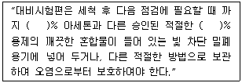

침투비파괴검사기사 (2016-03-06 기출문제)
1과목: 비파괴검사 개론
1. 방사선투과시험과 비교한 초음파탐상시험의 장점과 거리가 먼 것은?
- 시험체 두께에 대한 영향이 적다.
- 미세한 균열성 결함의 검사에 유리하다.
- 결함의 형태와 종류를 쉽게 알 수 있다.
- 한쪽 면에서만 접근할 수 있어도 탐상이 가능하다.
(정답률: 56%)

2. 다음 비파고검사 중 방사선투과검사와 가장 관계가 먼 것은?
- X-선 투과검사
- γ선 투과검사
- 중성자 투과검사
- X선 회절 분석
(정답률: 82%)
3. 다음 중 레이저(laser)와 관계가 없는 비파괴검사법은?
- 광 홀로그램(Optical holography)
- 광탄성 피막 검사(Photoelastic coating test)
- 모아레 검사(Moire test)
- 보아스코프 검사(Borescope test)
(정답률: 86%)
4. 다음 중 모세관속에 있는 액체의 높이와 관련이 먼 것은?
- 밀도
- 표면장력
- 점성
- 접촉각
(정답률: 35%)
5. 누설 시험에서 온도를 측정하는 온도계 중 비접촉식 온도계로 옳은 것은?
- 유리 온도계
- 방사 온도계
- 저항 온도계
- 열전대 온도계
(정답률: 62%)
6. Cu-Pb 계로 고속, 고하중에 적합한 베어링용 합금의 명칭은?
- 켈멧(Kelmet)
- 크로멜(Chromel)
- 슈퍼인바(Superinvar)
- 백 메탈(Back metal)
(정답률: 75%)
7. 순철의 자기변태와 동소변태를 설명한 것 중 옳은 것은?
- 자기변태는 결정격자가 변하는 변태이다.
- 동소변태란 결정격자가 변하지 않는 변태를 말한다.
- 동소변태점은 A1점이고, 자기변태 점은 923℃ 이다.
- 동소변태점은 A3점과 A4이고, 자기변태점은 768℃이다.
(정답률: 68%)
8. 고융점 금속에 관한 설명으로 틀린 것은?
- 증기압이 낮다.
- Mo는 체심입방격자를 갖는다.
- 융점이 높으므로 고온강도가 크다.
- W, Mo는 열팽창계수가 높고, 탄성률이 낮다.
(정답률: 46%)
9. 은백색의 금속으로 비중이 약 1.85 이며, 중성자를 잘 통과 시키므로 원자로 연료의 피복제, 중성자의 반사재나 원자핵분열기에 사용되는 금속은?
- Ge
- Be
- Si
- Te
(정답률: 55%)
10. Fe-C 평형상태도에서 가장 높은 온도에서 일어나는 변태는?
- 공석변태
- 공정변태
- 포정변태
- 포석변태
(정답률: 55%)
11. 가단주철의 특징으로 옳은 것은?
- 담금질 경화성이 없다.
- 경도는 Si 량이 많을수록 낮다.
- 충격성은 높으나, 절삭성이 나쁘다.
- 백주철의 시멘타이트로부터 흑연은 생성한다.
(정답률: 66%)
12. 재료의 연성을 알기 위한 것으로 구리판, 알루미늄판 등의 판재를 가압성형하여 변형 능력을 시험하는 것은?
- 마모시험
- 에릭센시험
- 크리프시험
- 스프링시험
(정답률: 53%)
13. 조직이(α+β)로서 상온에서의 전연성은 낮으나 강도가 높아 기계부품 등으로 사용되는 황동은?
- 60%Cu-40%Zn
- 70%Cu-30%Zn
- 80%Cu-20%Zn
- 95%Cu-5%Zn
(정답률: 72%)
14. 비강도가 크며, 항공우주용 재료에 사용되며, 비중이 A1의 약 2/3 정도 되는 금속은?
- Cd
- Cu
- Mg
- Zn
(정답률: 76%)
15. 다음 합금 원소 중에서 강의 경화능을 가장 많이 향상시키는 원소는?
- B
- Mo
- Cr
- Cu
(정답률: 43%)
16. 이산화탄소 아크용접에서 기공의 발생 원인이 아닌 것은?
- 이산화탄소 가스 유량이 부족하다.
- 노즐에 스패터가 많이 부착되어 있다.
- 공기가 침입해 들어간다.
- 이산화탄소 가스 순도가 매우 높다.
(정답률: 57%)
17. 전류가 높고 아크 길이가 특히 긴 경우에 발생하며, 용접금속 비산에 의한 용접봉의 손실을 초래하는 결함은?
- 기공
- 오버 랩
- 용입 불량
- 스패터
(정답률: 69%)
18. 연강용 피복아크 용접봉 심선의 재료로 사용되는 것은?
- 고장력강(high strength steel)
- 저탄소림드강(low carbon rimmed steel)
- 가단주철(malleable cast iron)
- 주강(cast steel)
(정답률: 73%)
19. 다음 용접 결함 중 구조상의 결함이 아닌 것은?
- 기공
- 융합 불량
- 언더컷
- 연성 부족
(정답률: 59%)
20. 불활성 가스 금속 아크 용접의 장점으로 틀린 것은?
- 수동 피복 아크 용접에 비해 용착효율이 높다.
- 불활성 가스 텅스텐 아크 용접에 비해 전류밀도가 높다.
- 탄산가스 아크 용접에 비해 스패터 발생이 적다.
- 불활성 가스 텅스텐 아크 용접에 비해 얇은 판 용접에 적합하다.
(정답률: 50%)
2과목: 침투탐상검사 원리
21. 침투탐상시험을 실시할 때 침투액 사용전, 부품을 어느 정도 가열하면 어떤 효과가 나타나는가?
- 침투액을 안정도가 증가한다.
- 탐상감도가 감소한다.
- 탐상감도가 증가한다.
- 탐상감도가 변하지 않는다.
(정답률: 53%)
22. 액체침투탐상시험 중 기름베이스를 사용하는 염색침투액을 사용할 때 유화시간은?
- 3분이내
- 30초이내
- 1분이내
- 2분이내
(정답률: 56%)
23. 용제제거성 염색침투액을 적용한 침투탐상시험으로 가장 쉽게 검출할 수 있는 균열은?
- 피로균열
- 입계균열
- 용력부식균열
- 구조물의 용접균열
(정답률: 58%)
24. 침투탐상시험시 결함검출의 목표를 이루기 위하여 가장 먼저 고려해야 할 사항은?
- 결함의 크기
- 결함의 방향성
- 시험체의 화학성분
- 시험체의 내부구조
(정답률: 46%)
25. 다음 중 습식현상제를 관리할 때 중요도가 가장 낮은 것은?
- 적심의 형태
- 오염
- 농도
- 세척성
(정답률: 55%)
26. 속건식 현상제를 사용하는 용제제거성 침투탐상시험을 할 경우 주의 사항으로 옳은 것은?
- 현상제의 도막 두께는 표면이 완전히 하얗게 되도록 충분히 두껍게 하는 것이 좋다.
- 현상제의 에어졸 캔을 움직이면서 도포하는 것은 캔 내의 쌓여 있는 현상제를 분쇄하기 위해서이다.
- 탐상시험 결과로 결함 여부를 확인하기 위하여 재시험하는 방법은 현상제를 닦아내고 다시 현상처리를 하는 것이다.
- 현상제의 에어졸 캔을 잘 교반하여 시험면에 부풀음이 생기지 않도록 균일하게 도포한다.
(정답률: 79%)
27. 0℃ 저온에서 침투탐상시험은 실시코자 할 경우, 어떠한 조치가 필요한가?
- 온도는 침투처리 영향이 없어 조치가 필요하다.
- 검사체를 적정 온도로 가열하고 침투액을 적용한다.
- 검사체를 저온 그대로 하고 침투액을 적정온도로 가열하여 적용한다.
- 0℃ 저온에서는 침투탐상검사 실시를 모두 중단시킨다.
(정답률: 74%)
28. 모세관현상에 대한 설명으로 틀린 것은?
- 모세관벽과 액체 사이의 접촉각이 90° 미만인 경우에는 모세관 현상으로 올라온 액체면이 오목하게 된다.
- 모세관벽과 액체사이의 접촉각이 90° 보다 큰 경우에는 액체가 관을 충분하게 적시지 못하고 액체면이 볼록하게 된다.
- 모세관내에서 액체가 상승한 높이는 액체의 포면장력과 접촉각의 cosθ값에 반비례하여 나타난다.
- 모세관내에서 액체가 상승한 높이는 액체의 밀도와 관의 직경에 반비례하여 나타난다.
(정답률: 61%)
29. 시험체 표면에 잉여 침투액을 제거하기 위해 배액할 때까지의 시간을 무엇이라 하는가?
- 침투시간
- 유화시간
- 현상시간
- 관찰시간
(정답률: 58%)
30. 침투액이나 현상제의 잔류물을 제거해 주는 후 처리과정이 반드시 필요한 경우는?
- 구조물의 불연속을 수리한 경우
- 배경 색깔과 구분이 확실히 만들어지는 경우
- 다음 공정이나 부품의 운전에 방해가 될 수 있는 경우
- 빨려나온 침투액의 유화과정에 도움을 줄 수 있는 경우
(정답률: 81%)
31. 침투탐상시험에서 전처리시 사용되는 세척용 솔벤트에 대한 설명으로 틀린 것은?
- 표면의 기름 및 그리이스를 용해시킬 수 있어야 한다.
- 오염을 시키지 말아야 한다.
- 세척성이 높아야 한다.
- 표면에 최소한의 잔류물을 남겨야 한다.
(정답률: 80%)
32. 다음 침투탐상시험 중에 물세척이 필요하지 않은 것은?
- 수세성 형광침투탐상시험
- 후유화성 형광침투탐상시험
- 후유화성 염색침투탐상시험
- 용제제거성 형광침투탐상시험
(정답률: 71%)
33. 다음 중 형광침투탐상시험에 사용되는 자외선 조사 등의 강도를 설명한 것으로 옳은 것은?
- 시험면에 대해 800~1000μW/cm2 이어야 한다.
- 시험면에 대해 800μW/cm2 이하이어야 한다.
- 시험면에 대해 600~800μW/cm2 이어야 한다.
- 시험면에 대해 600μW/cm2 이상이어야 한다.
(정답률: 66%)
34. 형광침투탐상시험에서 자외선조사 등이 필요한 가장 주된 이유는?
- 지시 모양이 확대되어 잘 보이기 때문이다.
- 자외선조사등에 의한 열로 건조를 용이하게 한다.
- 현상제가 형광을 발생시켜 잘 보이기 때문이다.
- 육안으로 지시를 볼 수 있도록 도와준다.
(정답률: 57%)
35. 사용중인 침투제의 성능점검을 1차적으로 간단히 할 수 있는 시험방법은?
- 침투액의 비중을 측정하여 점검한다.
- 침투액의 점성을 측정하여 점검한다.
- 대비시험편을 사용하여 비교시험한다.
- 메니커스(Menicus) 시험으로 점검한다.
(정답률: 67%)
36. 유성유화제를 만드는 물의 특성으로 가장 적당한 것은?
- 점성이 높을 것
- 점성이 낮을 것
- 활성도가 낮을 것
- 유화제를 혼탁하게 할 것
(정답률: 53%)
37. 후유화성 침투탐상시험에서 유화제를 바르는 시기는?
- 침투액을 뿌리기 전에
- 물로 씻기 전에
- 현상시간이 지난 후에
- 물로 씻고 난 후에
(정답률: 57%)
38. 침투탐상시험에서 건식현상제의 품질관리를 위해 일반적으로 사용되는 검사 방법은?
- 보통 육안으로 관찰한다.
- 비중을 측정하여 시험한다.
- 현상제의 수분함량 측저응로 시험한다.
- 용해시켜 침투제의 오염 여부를 점검한다.
(정답률: 68%)
39. 다음 중 어두운 장소에서 대량 생산부품의 작은 나사나 열쇠구멍, 각이 날카로운 부품 등의 탐사에 가장 적합한 침투탐상 시험방법은?
- 후유화성 형광침투탐상시험법
- 수세성 형광침투탐상시험법
- 용제제거성 형광침투탐상시험법
- 용제제거성 염색침투탐상시험법
(정답률: 65%)
40. 지시의 검출에 관련하여 현상제가 하는 기능은?
- 청결한 표면을 유지시킨다.
- 건조한 표면을 만들어 준다.
- 침투액을 유화시켜 준다.
- 주위와 색채 대비를 나타내 준다.
(정답률: 75%)
3과목: 침투탐상검사 시험
41. 다음 중 적심현상의 종류가 아닌 것은?
- 확장 적심
- 침적 적심
- 응집 적심
- 부착 적심
(정답률: 47%)
42. 침투탐상검사 시 가시도 측정에 필요한 반사된 빛의 양이 2%라면 R.V.U(Relative Visibility Units)의 값은 얼마인가?
- 2
- 20
- 50
- 100
(정답률: 50%)
43. 현상제 중 실온에서 휘발성이 높아 신속히 건조되어 별도의 건조나 가열이 불필요하며, 시험체에 적절한 두께의 현상막을 만들 수 있는 현상제는?
- 건식 현상제
- 습식 현상제
- 필름 현상제
- 속건식 현상제
(정답률: 70%)
44. 다음 중 특수목적의 침투탐상검사법과 메커니즘의 조합이 틀린 것은?
- 기체 방사성동위원소법 : Kr-85 이용
- 하전입자법 : 탄산칼슘 분말입자 이용
- 휘발성 액체법 : 휘발성 알코올 이용
- 여과입자법 : 누설전류 이용
(정답률: 68%)
45. 대비시험편을 사용하여 탐상조직의 적합여부를 점검하기 위한 방법의 설명으로 옳은 것은?
- 한쌍의 대비시험편에 각각 다른 탐상제를, 다른 조건으로 적용하여 얻어진 지시모양을 비교한다.
- 한쌍의 대비시험편에 동일한 탐상제를, 다른 조건으로 적용하여 얻어진 지시모양을 비교한다.
- 한쌍의 대비시험편에 동일한 탐상제를, 동일한 조건으로 적용하여 얻어진 지시모양을 비교한다.
- 한쌍의 대비시험편에 각각 다른 탐상제를, 동일한 조건으로 적용하여 얻어진 지시모양을 비교한다.
(정답률: 38%)
46. 침투탐상검사에 사용되는 탐상제 중 화재예방에 대한 관리가 필요 없는 것은?
- 건식현상제
- 속건식현상제
- 용제형세척제
- 용제제거성 침투제
(정답률: 54%)
47. 침투 탐상 검사에서 다음 중 알루미늄 대비 시험편의 주된 사용 목적인 것은?
- 결함의 검출 능력 검증
- 탐상제의 성능 저하 점검
- 검사원 기량 검증
- 검사 절차서 검증
(정답률: 62%)
48. 침투탐상검사를 실시하기 위한 검사준비와 가장 거리가 먼 것은?
- 용접부 덧붙임 높이를 측정하였다.
- 작업절차서(작업지시서)를 준비하였다.
- 지시의 관찰을 위해 백열등을 설치하였다.
- 용접부의 슬래그와 스패터의 존재여부를 확인하였다.
(정답률: 62%)
49. 침투탐상검사에서 재검사 방법에 대한 설명 중 옳게 설명한 것은?
- 현상제를 제거하고 현상처리를 한 후에 다시 검사한다.
- 어떤 경우에도 재검사는 불가능하다.
- 침투처리의 조작방법에 잘못이 발견되면 다시 침투처리부터 실시한다.
- 전처리를 포함하여 처음부터 다시 실시한다.
(정답률: 77%)
50. 침투 탐상 검사에서 불연속과 지시모야의 관계를 설명한 것 중 틀린 것은?
- 용접부의 표면 균열은 보통 연속된 선형지시모양을 나타낸다.
- 주조품 표면 탕계는 보통 연속된 선형지시모양을 나타낸다.
- 주조품 표면 단독 가스홀은 보통 단독 원형지시모양을 나타낸다.
- 단조품의 라미네이션은 보통 단독 원형지시모양을 나타낸다.
(정답률: 63%)
51. 시험온도 범위가 15~50℃ 일 때 권고되는 침투시간이 가장 긴 결함은?
- 랩(lap)
- 빈 틈새
- 쇳물경계
- 융합불량
(정답률: 69%)
52. 피로균열이나 연마균열 등의 폭이 매우 좁은 균열을 검출하고자 할 때 사용하지 않는 검사방법은?
- 수세성 염색침투탐상검사
- 후유화성 염색침투탐상검사
- 수세성 형광침투탐상검사
- 후유화성 형광침투탐상검사
(정답률: 43%)
53. 전처리방법 중 용제세척으로 제거하기 적합한 오염물은?
- 녹
- 스케일
- 유지류
- 용접 플럭스
(정답률: 60%)
54. 산화마그네슘, 산화칼슘, 산화티탄 등의 백색 미분말을 알코올류에 현탁하고 분산제를 첨가하여 만든 현상제는?
- 건식 현상제
- 속건식 현상제
- 습식 현상제
- 수용성 현상제
(정답률: 67%)
55. 저온에서 높은 압력으로 완성된 강단조물을 침투탐상검사한 결과 선형지시가 나타났다. 이 때의 선형지시 원인이 되는 불연속은 일차적으로 다음 중 어떤 것으로 의심해야 하는가?
- 터짐
- 기공
- 수축관
- 개재물 혼입
(정답률: 48%)
56. 다음 중 침투탐상검사를 적용할 때에 고려할 사항으로 거리가 가장 먼 것은?
- 검출할 결함의 종류 및 크기
- 검사에 사용되는 장치
- 제품의 제조 형태
- 검사품의 두께와 형태
(정답률: 50%)
57. 개방형 침투액조만 있어서 비교적 단시간 내에 침투되어 침투액 증발이 적은 침투탐상검사를 하려고 한다. 다음 주에서 어떤 방법이 가장 적합한가? (단, 시험체 표면은 평활하나, 얕고 가느다란 결함이 예상되며, 암실 시설을 갖추고 있다.)
- 수세성 형광침투탐상검사
- 수세성 염색침투탐상검사
- 후유화성 형광침투탐상검사
- 용제제거성 염색침투탐상검사
(정답률: 63%)
58. 다음에 열거한 침투탐상시험 방법 중에서 탐상감도가 가장 우수한 것은?
- 용제제거성 염색 침투액 - 속건식 현상법
- 후유화성 염색 침투액 - 속건식 현상법
- 용제제거성 형광 침투액 – 습식 현상법
- 후유화성 형광 침투액 – 습식 현상법
(정답률: 60%)
59. 침투탐상검사 시 검사결과에 가장 적은 영향을 주는 외부의 오염은?
- 검사대 위에 떨어져 있는 침투제
- 검사원의 손에 묻어 있는 침투제
- 현상제에 세척제가 오염되어 있는 경우
- 현상제에 침투제가 오염되어 있는 경우
(정답률: 31%)
60. 단조 강의 검사 시 시험체의 형상 때문에 세척의 정도를 조절할 필요가 있는 경우 가장 적합한 침투탐상검사법은?
- 수세성 방법
- 기름베이스 유화제를 사용하는 후유화성 방법
- 용제제거성 방법
- 물 베이스 유화제를 사용하는 후유화성 방법
(정답률: 27%)
4과목: 침투탐상검사 규격
61. 보일러 및 압력용기에 대한 침투탐상검사(ASME Sec.V Art.6)에 따라 수세성 침투제는 과잉 침투액을 물로 제거할 때 수압 및 수온에 대한 설명으로 옳은 것은?
- 수압은 30psi를 넘지 않아야 하며, 수온은 50°F를 넘지 않아야 한다.
- 수압은 50psi를 넘지 않아야 하며, 수온은 50°F를 넘지 않아야 한다.
- 수압은 30psi를 넘지 않아야 하며, 수온은 110°F를 넘지 않아야 한다.
- 수압은 50psi를 넘지 않아야 하며, 수온은 110°F를 넘지 않아야 한다.
(정답률: 58%)
62. 침투 탐상 시험 방법 및 지시 모양의 분류(KS B 0816)에 의한 시험의 조작에서 시험체의 일부분을 시험하는 경우에 시험하는 부분에서 바깥쪽으로 몇 mm 의 넓은 범위를 깨끗하게 전처리해야 하는가?
- 20mm
- 25mm
- 30mm
- 35mm
(정답률: 74%)
63. 침투탐상 시험방법 및 침투지시모양의 분류(KS B 0816)에서 유화제의 점검방법으로 틀린 것은?
- 유화제의 성능시험은 A형 대비시험편을 이용할 수 있다.
- 겉모양 검사 시 현저하게 흐리거나 침전물이 생기는가를 점검한다.
- 점도 상승으로 인한 유화성능 저하를 점검한다.
- 형광휘도의 저하를 점검한다.
(정답률: 64%)
64. 침투탐상 시험방법 및 침투지시모양의 분류(KS B 0816)에서 정하는 자외선 등의 강도는?
- 800 μW/cm2
- 1000 μW/cm2
- 3300 μW/cm2
- 3900 μW/cm2
(정답률: 80%)
65. 침투탐상 시험방법 및 침투지시모양의 분류(KS B 0816)에서 사용하는 침투액에 따른 분류의 이원성 염색침투액을 나타내는 기호는?
- V
- F
- DV
- DF
(정답률: 65%)
66. 침투탐상 시험방법 및 침투지시모양의 분류(KS B 0816)에 따른 결함 분류로 틀린 것은?
- 군집 결함
- 독립 결함
- 연속 결함
- 분산 결함
(정답률: 66%)
67. 보일러 및 압력용기에 대한 표준침투탐상검사(ASME Sec.V Art.24 SE-165)에 따른 강용접부 불연속부의 종류로 볼 수 있는 결함은?
- 겹침
- 수축공
- 라미네이션
- 크레이터 균열
(정답률: 30%)
68. 침투탐상 시험방법 및 침투지시모양의 분류(KS B 0816)에 따라 탐상검사를 마친 후 검사보고서에 반드시 기록하지 않아도 되는 항목은?
- 액온이 15℃ 이하 일 때 침투액의 온도
- 기온이 15~50℃ 일 때 시험 장소의 온도
- 현상제의 적용방법
- 전처리의 방법
(정답률: 67%)
69. 침투탐상 시험방법 및 지시 모양의 분류(KS B 0816)에 따른 시험편의 사용방법으로 부적합한 것은?
- A형 시험편은 원칙적으로 홈을 사이에 둔 양쪽면을 1조로 하여 사용한다.
- 탐상제의 성능시험은 비교할 탐상제를 1조의 대비시험편 각면에 적용하되 동일 조건의 시험을 통해 비교한다.
- 조작의 적합여부 시험은 1조의 대비시험편에 서로 다른 탐상제를 동일 조건의 시험을 통해 비교한다.
- B형 대비시험편은 원칙적으로 갈라짐에 대하여 직각방향으로 1/2로 절단한 2편을 1조로 하여 사용한다.
(정답률: 41%)
70. 침투탐상 시험방법 및 침투지시모양의 분류(KS B 0816)에 따른 적용할 시험방법의 선정시 고려하여야 할 사항으로 틀린 것은?
- 시험품의 용도와 표면거칠기
- 예상결함 종류와 크기
- 탐상제의 성질
- 시험품의 밀도
(정답률: 66%)
71. 보일러 및 압력용기에 대한 표준침투탐상검사(ASME Sec.V Art.24 SE-165)에서 전처리 방법 중 용제 세척액으로 잔류물을 없애기 어려워 권고되지 않는 오염물로 옳은 것은?
- 그리스, 왁스
- 왁스, 도료
- 녹, 스케일
- 왁스, 유기물
(정답률: 63%)
72. 비파괴검사-침투탐상검사-검증 수단(KS B ISO 3453)의 대비시험편에 대한 설명 중 ( )안에 알맞은 숫자를 순서대로 나열한 것은?

- 20, 40
- 30, 60
- 40, 60
- 50, 50
(정답률: 28%)
73. 침투탐상 시험방법 및 침투지시모양의 분류(KS B 0816)의 B형 대비시험편 주 재료는?
- 주철
- 강철
- 알루미늄
- 구리합금
(정답률: 48%)
74. 보일러 및 압력용기에 대한 침투탐상검사(ASME Sec.V Art.6)의 판독에 대한 설명으로 틀린 것은?
- 형광침투제를 사용한 경우 자외선 등을 사용하여야 한다.
- 염색침투제를 사용한 경우 자외선 등을 사용하여야 한다.
- 최종 판독은 건식현상제의 적용 직후 10~60분 이내에 실시한다.
- 최종 판독은 습식현상제의 피막이 건조된 직후 10~60분 이내에 실시한다.
(정답률: 69%)
75. 보일러 및 압력용기에 대한 침투탐상검사(ASME Sec.V Art.6)에 의한 침투 탐상 검사의 비교 시험편 제작에 사용되는 재질은?
- Al
- Cu
- Ni
- Cr
(정답률: 62%)
76. 보일러 및 압력용기에 대한 표준침투탐상검사(ASME Sec.V Art.24 SE-165)로 탐상검사를 수행할 때 1종 C 방법이면 어떤 것인가?
- 수세성 형광침투탐상시험
- 수세성 염색침투탐상시험
- 후유화성 염색침투탐상시험
- 용제제거성 형광침투탐상시험
(정답률: 59%)
77. 침투탐상 시험방법 및 침투지시모양의 분류(KS B 0816)에서 침투 처리 시 고려해야할 사항이 아닌 것은?
- 시험체의 모양
- 시험체의 치수
- 시험체의 수량 및 침투액의 종류
- 시험체의 가격
(정답률: 73%)
78. 보일러 및 압력용기에 대한 침투탐상검사(ASME Sec.V)에 따른 침투탐상시험에서 시험체 온도가 정상범위를 벗어날 때 침투액의 성능을 알기 위해 사용되는 비교시험편은?
- 담금질에 의해 만드렁진 미세균열을 가진 알루미늄 시험편
- 노멀라이징으로 오스테나이트 조지깅 된 스테인리스강판
- 미세한 균열을 가진 니켈 크롬 도금 강판
- 미세한 냉간 균열을 가진 탄소강 시험편
(정답률: 55%)
79. ASME Sec. VⅢ에서 침투지시를 평가할 때 평가되어야 할 최소 크기는?
- 3/4인치
- 1/4인치
- 1/8인치
- 1/16인치
(정답률: 59%)
80. 침투탐상 시험방법 및 침투지시모양의 분류(KS B 0816)에 의거 침투탐상시험 결과 거의 동일 직선상에 두 개의 선모양 흠이 각각 3mm와 1.5mm가 확인되었다. 흠의 거리가 3mm로 측정되었다면 다음 중 옳은 것은?
- 연속된 하나의 흠지시로 간주한다.
- 독립된 두 개의 흠지시로 간주한다.
- 분산된 흠으로 4급으로 분류해야만 한다.
- 원모양 흠으로 분류해야만 한다.
(정답률: 64%)